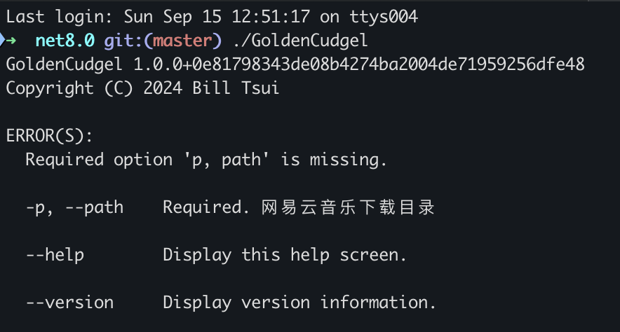
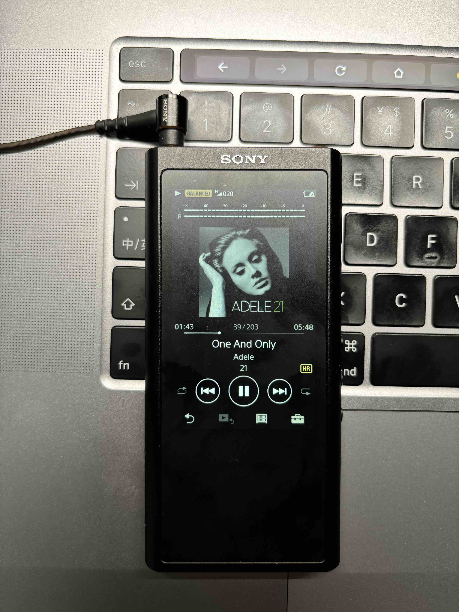

本文章内容不得用于商业用途，仅做学习交流。如作他用所承受的法律责任一概与作者无关。
NCM格式是网易云音乐独有的文件格式，且无法脱离网易云音乐程序播放。所以解码的逻辑一定就在网易云音乐的程序里面。可以从各个平台的客户端入手，寻找一下解密的痕迹。
开局一张图，剩下全靠编(码) —— NCM文件结构组成

按照文件结构，采用 Chain of Responsibility 模式构建解析过程。其中最核心的几个技术点：
- RC4算法
- Meta信息解析
- Meta后缀是flac但实际格式有可能是mp3
RC4、AES算法内容可以参考这本书 应用密码学：协议、算法与C源程序（原书第2版） 。
1
2
3
4
5
6
7
8
9
10
11
12
13
14
15
16
17
18
19
20
21
22
23
24
25
26
27
28
29
|
public class RC4
{
private readonly byte[] _box = new byte[256];
public void KSA(byte[] key)
{
var len = key.Length;
for (var i = 0; i < 256; i++) _box[i] = (byte)i;
for (int i = 0, j = 0; i < 256; i++)
{
j = (j + _box[i] + key[i % len]) & 0xff;
(_box[i], _box[j]) = (_box[j], _box[i]);
}
}
public void PRGA(byte[] data, int length)
{
for (var k = 0; k < length; k++)
{
var i = (k + 1) & 0xff;
var j = (_box[i] + i) & 0xff;
data[k] ^= _box[(_box[i] + _box[j]) & 0xff];
}
}
}
|
格式不匹配问题，是在用TagLib写入Meta数据的时候抛异常发现的。需要读取 File Signatures 来判断。
1
2
3
|
if (BitConverter.ToString(ncmObject.MusicDataArray.Slice(0, 3).ToArray()).Equals("49-44-33"))
ncmObject.NeteaseCopyrightData.Format = "mp3";
|
其他地方没什么难度。话说回来，.Net跨平台任重道远。Mac上面跑只需要500MB+，Windows上面能用掉3G内存。
完整的代码在 这里 ，支持 Windows & MacOS。
编译成功后使用 -p,–path 参数传入目录即可。

使用 Sony NW-ZX300A 实测可以正常显示专辑封面，HiRes标志也正常显示，我又可以做回 Walkman 了
